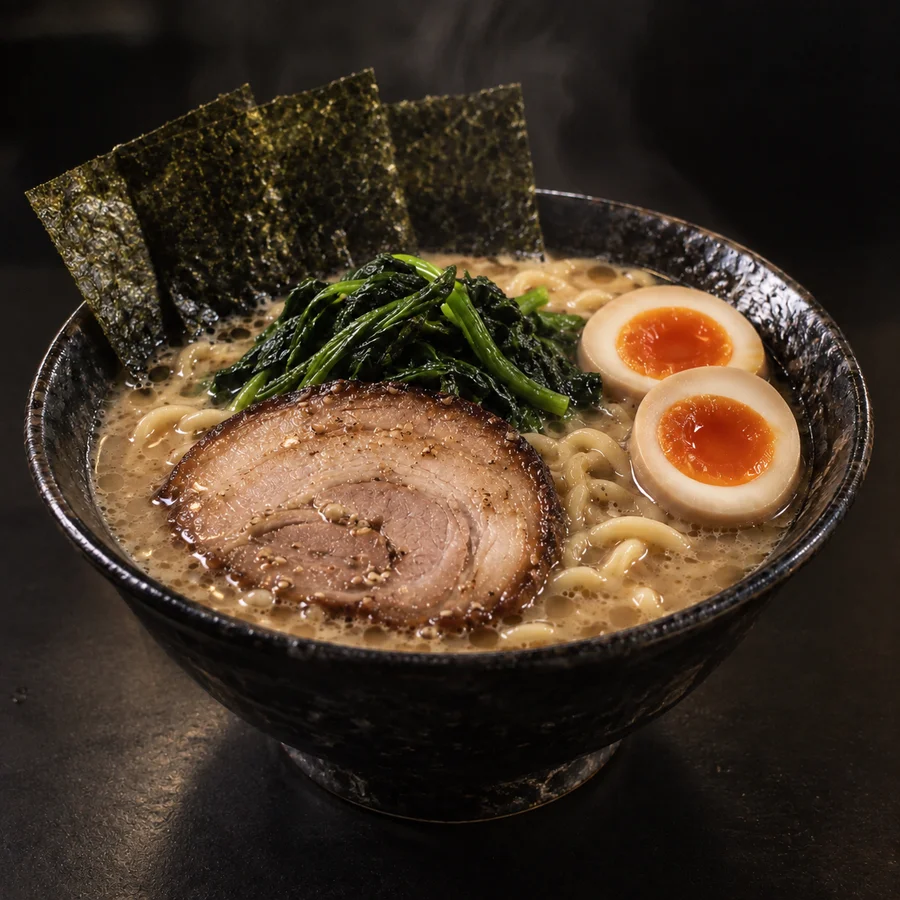

一杯に、魂を込めて。
UDEBIYA
腕火屋 UDEBIYA
THE MENU
一杯に、すべてを込めて。

豚骨の旨味、醤油のキレ、もっちりとした中太麺。腕火屋の一杯を、お好みで。
すべて税込・架空のサンプル価格です。
麺の硬さ、味の濃さ、油の量。お好みを選んでみてください。
麺：普通 ／ 味：普通 ／ 油：普通
お好みを試すデモです。注文・送信は行いません。
UDEBIYA / DEMO INFORMATION